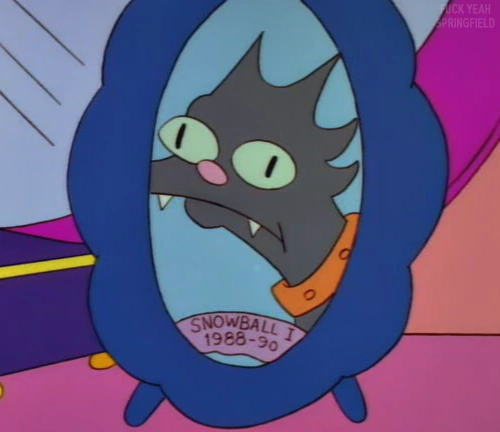

"My Kitty Died" is a song that Lisa sings in the televised portion of the Krusty's Li'l Starmaker competition. Homer wrote it as a tribute to the late Snowball I.
My kitty died,
On Christmas Eve.
Daddy told me to be brave.
But instead of singing carols,
I was digging Snowball's grave.
